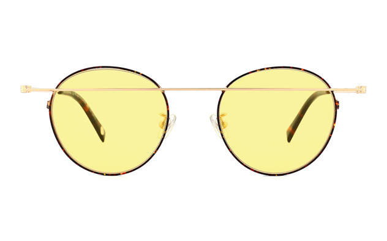

Fuvis Ocular
Sunglasses
Type of Glasses
Type: Rectangle
Avoid frames that are too large for your face and cover up more than half of it. Try on several different styles until you find a pair that is just right. A pair that covers up too much of your face will be overpowering and won’t be flattering. When choosing glasses for oval face shapes you also want to remember colour. Colours that match with your eyes and hair are going to look the best and will get you the most compliments. While brown eyes look best when sticking to tones of similar colours blue and green eyes will pop against the darker browns and earthy shades.

Type: Round
Characterized by a broad forehead, strong horizontal jawline and square chin, square faces are generally proportional in width and length. The key for squares is to find frames that allow their architectural features to shine. Try softer oval or round shapes to contrast the straight lines of the square face. For rectangular frames, choose those with softened edges and avoid sharp corners. Choose frames that emphasize the browline with shape or color to balance out the jawline.
Type: Wellington
Heart shape faces feature a broad forehead that tapers to a small chin. Cheekbones are generally high and angled following the contour of the face. The trick for heart shapes is to find shapes that balance the varying widths of their face.
Type: Boston
Go for frames with a strong or accented brow line that give a strong horizontal element. Frames with a bit of depth in the lenses will balance the length of the face. Shapes with rounded edges and curved lines will soften the angularity of the face. Stay away from small, narrow lenses that will exaggerate face length.